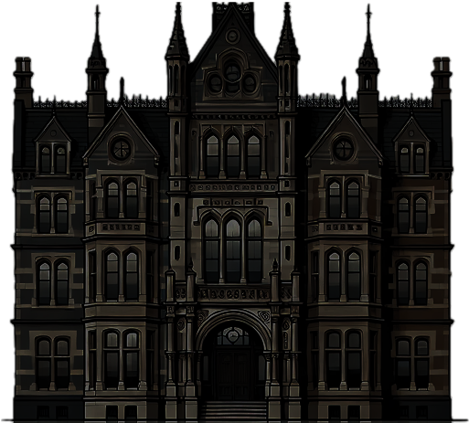
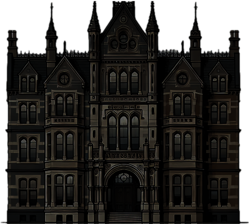

Detective Jones realized, as the
mansion crumbled, that
destroying the journal had only
unleashed something far worse
...
The horrors within
Blackwood Mansion
were just beginning....
As pieces of the build start to
fall around him will Detective
Jones make it out alive or
was, he the last sacrifice?
Some mysteries are best to
stay hidden

 
